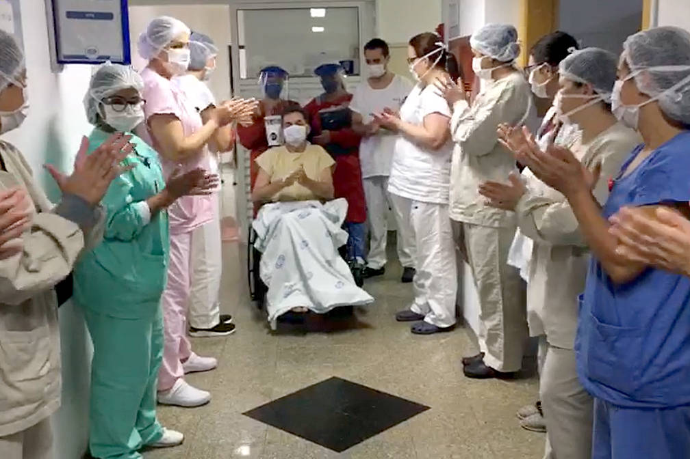
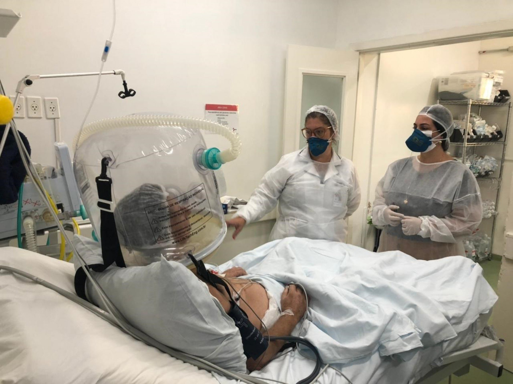

Covid-19
doença infecciosa causada pelo vírus SARS-CoV-2A pandemia do novo coronavírus trouxe grandes descobertas para as pessoas e para a ciência. Mais de um ano depois da primeira infecção no Brasil, os profissionais da saúde já descobriram que as sequelas do coronavírus podem afetar a qualidade de vida e até levar à morte.
Essas queixas que persistem mesmo após o vírus ir embora fazem parte da Síndrome Pós-COVID.
Qualquer pessoa que testou positivo para Covid-19 pode sofrer com as sequelas da doença. A intensidade dos sintomas varia de pessoa para pessoa e o recomendado é que um profissional da saúde faça o acompanhamento para investigar as queixas e garantir que a saúde retorne ao perfeito estado.
Os casos de Covid-19 mais leves e moderados são aqueles em que as pessoas apresentam febre, tosse seca, dor de cabeça, cansaço e leve dificuldade para respirar. Quando olhamos para as estatísticas, percebemos que esses quadros representam a maior quantidade, e isso é ótimo, mas nem por isso a doença deve ser encarada como algo trivial. Apesar dos problemas não evoluírem para algo mais grave, muitas pessoas podem apresentar a Síndrome Pós-COVID.
De maneira geral, as principais manifestações da Síndrome pós-Covid relatadas até agora são:
- Fadiga
- Falta de ar
- Dores de cabeça
- Queda de cabelo
- Perda de paladar
- Perda de olfato
- Dificuldades cognitivas
- Transtornos psiquiátricos
- Trombos pelos vasos
- Cansaço excessivo
- Pulmões fragilizados
- Ansiedade
- Lesão renal
Especialistas concordam que não há um tratamento específico para a Síndrome pós-Covid-19: a única alternativa é oferecer um atendimento personalizado e com foco na recuperação da saúde integral do paciente. Os métodos de tratamento devem ser definidos de acordo com a gravidade do quadro clínico, comorbidades pré-existentes e idade.
A osteopatia, área de especialização da fisioterapia, apresenta ótimos resultados no tratamento de pacientes acometidos pela Síndrome pós-Covid. O profissional da área tem um grande domínio do funcionamento do corpo humano e consegue atuar em diferentes frentes para contribuir com a recuperação completa. É importante entender que cada ser humano é único e a doença é relativamente nova, portanto, apenas um profissional da saúde capacitado poderá avaliar e sugerir os cuidados necessários.
A Síndrome pós-Covid pode levar a diferentes queixas, por isso, se você testou positivo e sente que não está completamente saudável, fique de olho nos sinais que seu corpo está transmitindo. Os profissionais ainda estão analisando se as sequelas podem ser permanentes, mas já se sabe que a maior parte dos quadros tem recuperação.